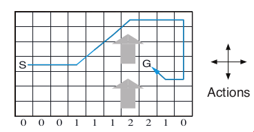
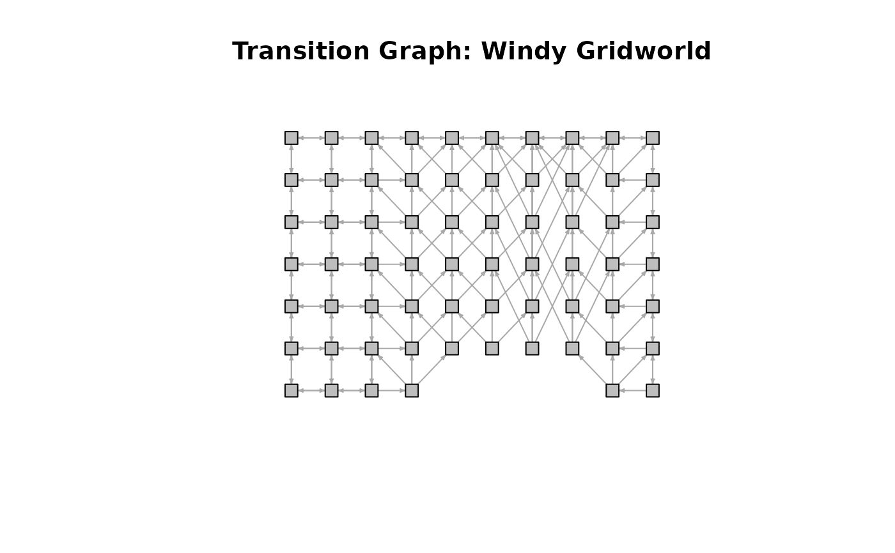
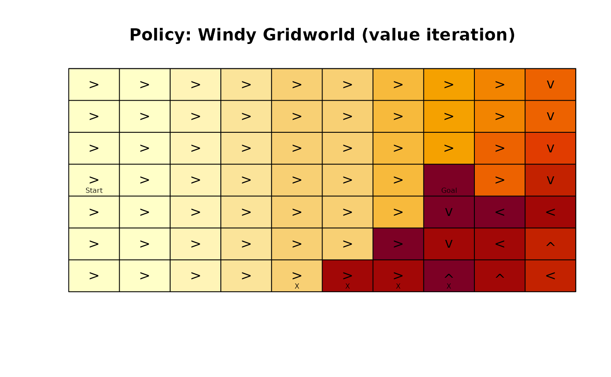

The Windy gridworld MDP example from Chapter 6 of the textbook "Reinforcement Learning: An Introduction."
Format
An object of class MDP.
Details
The gridworld has the following layout:

The grid world is represented as a 7 x 10 matrix of states. In the middle region the next states are shifted upward by wind (the strength in number of squares is given below each column). For example, if the agent is one cell to the right of the goal, then the action left takes the agent to the cell just above the goal.
No discounting is used (i.e., \(\gamma = 1\)).
References
Richard S. Sutton and Andrew G. Barto (2018). Reinforcement Learning: An Introduction Second Edition, MIT Press, Cambridge, MA.
See also
Other MDP_examples:
Cliff_walking,
DynaMaze,
MDP(),
Maze
Other gridworld:
Cliff_walking,
DynaMaze,
Maze,
gridworld
Examples
data(Windy_gridworld)
Windy_gridworld
#> MDP, list - Windy Gridworld
#> Discount factor: 1
#> Horizon: Inf epochs
#> Size: 70 states / 4 actions
#> Start: s(4,1)
#>
#> List components: ‘name’, ‘discount’, ‘horizon’, ‘states’, ‘actions’,
#> ‘transition_prob’, ‘reward’, ‘info’, ‘start’
gridworld_matrix(Windy_gridworld)
#> [,1] [,2] [,3] [,4] [,5] [,6] [,7] [,8]
#> [1,] "s(1,1)" "s(1,2)" "s(1,3)" "s(1,4)" "s(1,5)" "s(1,6)" "s(1,7)" "s(1,8)"
#> [2,] "s(2,1)" "s(2,2)" "s(2,3)" "s(2,4)" "s(2,5)" "s(2,6)" "s(2,7)" "s(2,8)"
#> [3,] "s(3,1)" "s(3,2)" "s(3,3)" "s(3,4)" "s(3,5)" "s(3,6)" "s(3,7)" "s(3,8)"
#> [4,] "s(4,1)" "s(4,2)" "s(4,3)" "s(4,4)" "s(4,5)" "s(4,6)" "s(4,7)" "s(4,8)"
#> [5,] "s(5,1)" "s(5,2)" "s(5,3)" "s(5,4)" "s(5,5)" "s(5,6)" "s(5,7)" "s(5,8)"
#> [6,] "s(6,1)" "s(6,2)" "s(6,3)" "s(6,4)" "s(6,5)" "s(6,6)" "s(6,7)" "s(6,8)"
#> [7,] "s(7,1)" "s(7,2)" "s(7,3)" "s(7,4)" "s(7,5)" "s(7,6)" "s(7,7)" "s(7,8)"
#> [,9] [,10]
#> [1,] "s(1,9)" "s(1,10)"
#> [2,] "s(2,9)" "s(2,10)"
#> [3,] "s(3,9)" "s(3,10)"
#> [4,] "s(4,9)" "s(4,10)"
#> [5,] "s(5,9)" "s(5,10)"
#> [6,] "s(6,9)" "s(6,10)"
#> [7,] "s(7,9)" "s(7,10)"
gridworld_matrix(Windy_gridworld, what = "labels")
#> [,1] [,2] [,3] [,4] [,5] [,6] [,7] [,8] [,9] [,10]
#> [1,] "" "" "" "" "" "" "" "" "" ""
#> [2,] "" "" "" "" "" "" "" "" "" ""
#> [3,] "" "" "" "" "" "" "" "" "" ""
#> [4,] "Start" "" "" "" "" "" "" "Goal" "" ""
#> [5,] "" "" "" "" "" "" "" "" "" ""
#> [6,] "" "" "" "" "" "" "" "" "" ""
#> [7,] "" "" "" "" "X" "X" "X" "X" "" ""
# The Goal is an absorbing state
which(absorbing_states(Windy_gridworld))
#> s(4,8)
#> 53
# visualize the transition graph
gridworld_plot_transition_graph(Windy_gridworld,
vertex.size = 10, vertex.label = NA)

# solve using value iteration
sol <- solve_MDP(Windy_gridworld)
sol
#> MDP, list - Windy Gridworld
#> Discount factor: 1
#> Horizon: Inf epochs
#> Size: 70 states / 4 actions
#> Start: s(4,1)
#> Solved:
#> Method: ‘value iteration’
#> Solution converged: TRUE
#>
#> List components: ‘name’, ‘discount’, ‘horizon’, ‘states’, ‘actions’,
#> ‘transition_prob’, ‘reward’, ‘info’, ‘start’, ‘solution’
policy(sol)
#> state U action
#> 1 s(1,1) -15 right
#> 2 s(2,1) -15 right
#> 3 s(3,1) -15 right
#> 4 s(4,1) -15 right
#> 5 s(5,1) -15 right
#> 6 s(6,1) -15 right
#> 7 s(7,1) -15 right
#> 8 s(1,2) -14 right
#> 9 s(2,2) -14 right
#> 10 s(3,2) -14 right
#> 11 s(4,2) -14 right
#> 12 s(5,2) -14 right
#> 13 s(6,2) -14 right
#> 14 s(7,2) -14 right
#> 15 s(1,3) -13 right
#> 16 s(2,3) -13 right
#> 17 s(3,3) -13 right
#> 18 s(4,3) -13 right
#> 19 s(5,3) -13 right
#> 20 s(6,3) -13 right
#> 21 s(7,3) -13 right
#> 22 s(1,4) -12 right
#> 23 s(2,4) -12 right
#> 24 s(3,4) -12 right
#> 25 s(4,4) -12 right
#> 26 s(5,4) -12 right
#> 27 s(6,4) -12 right
#> 28 s(7,4) -12 right
#> 29 s(1,5) -11 right
#> 30 s(2,5) -11 right
#> 31 s(3,5) -11 right
#> 32 s(4,5) -11 right
#> 33 s(5,5) -11 right
#> 34 s(6,5) -11 right
#> 35 s(7,5) -11 right
#> 36 s(1,6) -10 right
#> 37 s(2,6) -10 right
#> 38 s(3,6) -10 right
#> 39 s(4,6) -10 right
#> 40 s(5,6) -10 right
#> 41 s(6,6) -10 right
#> 42 s(7,6) -2 right
#> 43 s(1,7) -9 right
#> 44 s(2,7) -9 right
#> 45 s(3,7) -9 right
#> 46 s(4,7) -9 right
#> 47 s(5,7) -9 right
#> 48 s(6,7) -1 right
#> 49 s(7,7) -2 right
#> 50 s(1,8) -8 right
#> 51 s(2,8) -8 right
#> 52 s(3,8) -8 right
#> 53 s(4,8) 0 down
#> 54 s(5,8) -1 down
#> 55 s(6,8) -2 down
#> 56 s(7,8) -1 up
#> 57 s(1,9) -7 right
#> 58 s(2,9) -7 right
#> 59 s(3,9) -6 right
#> 60 s(4,9) -5 right
#> 61 s(5,9) -1 left
#> 62 s(6,9) -2 left
#> 63 s(7,9) -2 up
#> 64 s(1,10) -6 down
#> 65 s(2,10) -5 down
#> 66 s(3,10) -4 down
#> 67 s(4,10) -3 down
#> 68 s(5,10) -2 left
#> 69 s(6,10) -3 up
#> 70 s(7,10) -3 left
gridworld_plot_policy(sol)
